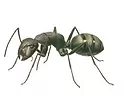
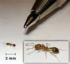
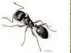

Fourmi charpentière
Brune foncé ou noire, mesure de 4 à 6 mm pour les ouvrières et jusqu'à 15 mm pour les reines. Cette fourmi nidifie à l'extérieur, dans les jardins sous les terrasses, dans l'herbe, sous les murs. Ces fourmis pénètrent régulièrement dans les maisons pour y rechercher de la nourriture.
Fourmi pharaon
De couleur jaune-brun, noire ou brun-rouge pour les reines. Taille : de 1,5 à 2,5 mm pour les ouvrières, 3 mm pour les mâles, et de 3,6 à 5 mm pour les reines.
en raison de leurs besoins en température et en humidité, ces fourmis sont confinées aux bâtiments. Une colonie peut compter jusqu'à plusieurs dizaines de milliers d'individus. Les infestations se propagent à l'intérieur des locaux par les fissures, gaines techniques, vide-ordures, et les ouvrières sont particulièrement nuisibles par leur recherche permanente de nourriture.
Fourmi de pavé

de couleur jaune foncé ou brun clair mesure entre 2 et 4 mm de long. Bien qu'omnivores, elles privilégient les aliments sucrés.
Sa tête et son thorax sont marqués par des lignes parallèles. Des antennes à 12 segments s’érigent au dessus de ses yeux. La particularité de la fourmi des pavés est qu’elle se déplace lentement.
Les ouvrières des fourmis des pavés sont des femelles stériles et dépourvues d’ailes.
Les reines des fourmis des pavés se démarquent de leurs ouvrières. Seules femelles reproductrices, elles mesurent 8 mm de longueur et leurs antennes ont 3 gros segments au lieu de 12. Comme les mâles, elles possèdent également des ailes.
Famedextermination vous propose un traitement anti fourmis efficace, rapide et sur mesure.
Nous vous donnerons également les meilleurs conseils afin d'éviter les récidives